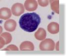

Above is a standard "dotplot" display from a flow cytometer. It shows the "scatter" display of while blood cells - at the left, the small yellow population are lymphocytes, (CD4 is a lymphocyte) monocytes are in the middle and the large population at the top are neutrophils.
 The blue cell is a lymphocyte and the other cells are red blood cells (RBCs). There are a couple of platelets as well (the small blue dots). This is the same stain as a hematologist would normally use when you go to the doctor for a blood test. |
History of CD4In the 40 years since the invention of the cell sorter by Mack Fulwyler, a revolution has occured within the world of immunology primarily driven by innovations of Len Herzenberg and others as cytometry matured into a powerful technology in medical research and clinical practice. Today however, there are between 30 and 40 million individuals in resource-poor nations infected with the HIV virus who desperately need to receive antiviral therapy. There are two primary reasons why they don't get it. First, the cost is high. Many individuals are working hard to reduce the cost of this therapy. Second, in order to receive therapy, each individual must be monitored for his/her CD4 levels. This is primarily done by flow cytometry. Unfortunately flow cytometry is complex and expensive in today's technology-focused world. It should not be. Cytometers can be made very inexpensively. The technology is 40 years old. It has matured to a point that while next generation ideas are important, they are not the solution for the immediate problem of AIDS patient evaluation for CD4 levels in Africa today. Blood cells - lymphocytes, monocytes, and granulocyesEssentially there are 3 subsets of cells in blood - white bloods cells (WBCs), red blood cells (RBCs) and platelets. Blood is red primarily because we have 1000 RBCs for every single WBC. So its hard to even find a white blood cell. Its gets worse when you want to count CD4 cells. White blood cells can be broadly divided into three further classifications - lymphocytes, monocytes, and granulocytes. CD4 cells are in the lymphocyte family. Within lymphocytes we have cells commonly called B cells (they make immunoglobulin to give you immunity) and T cells (they recognize and fight many diseases), and an assortment of rather odd and complex cells. We know the approximate number of cells that appear in "normal" individuals, so we see that about 70% of lymphocytes appear to be T cells (called CD3 cells) and about 15-20% appear to be B cells (called CD20 cells). Within the T cells we have many recognized subsets of cells - but most people recognize those called CD4 (about 45% of T cells) and CD8 (about 25% of T cells). In a normal person that means that there are about two CD4 cells for every single CD8 cells. Actually, when you look at lymphocytes under a microscope as in the photos just below, its impossible to tell the difference between any of the lymphocytes subsets - the T cells, B cells or the non-T non-B lymphocytes. You have to use special tags as described in the section CD4 Testing Today.
What is CD4 and why do we need to measure it?CD4 is the name we use to identify a special subset of lymphocytes that is vital for fighting disease (see the blue cell in the image at left - the pink colored cells are red blood cells). A lymphocyte is one of the several types of white blood cells that are in our blood. The lymphocyes are know as "immune cells" and they do exactly what that sounds like - they are very important cells in our immune response to infections. It turns out that the AIDS virus attaches itself to the CD4 cell and destroys it. The HIV virus actually uses the CD4 cells as its replication base and in replicating, it destroys the cell. Eventually an HIV positive person will lose CD4 cells to the point that they cannot survive. The more these individuals get infections with different organisms, the more likely that person will lose immune protection against those organisms. At some point, it is almost impossible for someone to fight off infections that would normally do very little to healthy people. So knowing how many CD4 lymphocytes a patient has is a crucial piece of information that a physician needs when deciding whether or not a patient should receive antiviral therapy. In fact, in many places, it is necessary to identify the number of CD4 cells in a person's blood prior to making a decision to give therapy. How is CD4 measured?We measure blood cells by relating how many there are in a cubic millimeter of blood. There are published "normal" ranges for blood cells. Strangely, they seem to differ depending what country you come from - and the numbers also vary according to age. When we measure the absolute number of CD4 cells in a normal person we should expect to have a range of about 500-1500. Since we frequently have about twice the number of CD4 cells as CD8 cells, we would then expect the CD8 absolute numbers to be in the range of 250-750 - but in fact they vary quite a lot owing to infections, time of day, the total WBC count, and lots of other factors. This makes it a little difficult to talk about exact numbers. CD4 and AIDSYou hear a lot about about CD4 in the context of AIDS because as stated earlier, the HIV virus destroys CD4 cells. The Centers for Disease Control (CDC) has defined some diagnostic values: one is that a person with a CD4 count less than 200 is considered to have AIDS. (There is also a requirement for a low percentage of CD4 cells as well). One of the problems that occurs in measuring total CD4 cells is that you can't just measure the total number of CD4+ cells. Why not? Well because it turns out that some monocytes also express positive CD4. So, if you are not careful, you will get a false number of CD4 cells. How do you fix that? The easiest way is to make sure that the cells you are measuring are T cells (monocytes are not T cells). So if you also measure total T cells (CD3) and make sure you know what percentage of CD3+ cells are also CD4+ you have an accurate number. There are actually several other ways that you can measure CD4 cells but they are not discussed here. The current preferred test for CD4 cell counts is using flow cytometry. You can find out more about flow cytometry by going to CD4 Testing Today. |
|